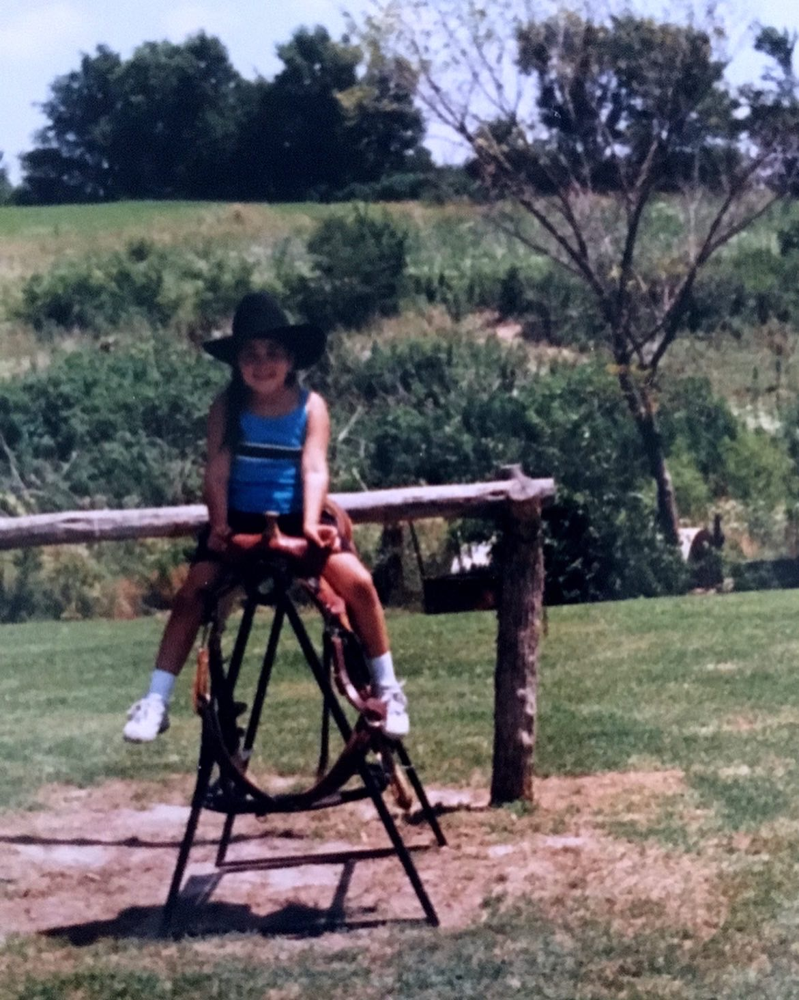

Digital content leadership
SVP Worldwide · CREATIVATE™Editorial planning, global content coordination, website messaging, and collaboration across product, marketing, and engineering.
THE PERSON BEHIND THE WORK
I’m Lea Danitra Bryant. My career has taken a few directions. Every one has given me something I still use.

A girl growing up in Arizona, with Kansas roots and a family that loves sports.
Sports followed me into college at Grambling State University, where I studied multimedia journalism and worked as a football equipment manager. I experienced the stories on the field and the work happening behind the scenes.
Journalism opened a door into broadcasting. My career later took me through education programs, beauty marketing, and digital content leadership. I earned an MBA, learned full-stack web development, and kept finding new ways to connect creative thinking with useful work.
Today, the Franklin/Nashville area is home. I still love photography, working through code, and the feeling of learning how to do something I couldn’t do before.
The Grambling chapter deserves its own page ↗THE CAREER CHAPTERS
Editorial planning, global content coordination, website messaging, and collaboration across product, marketing, and engineering.
Social content, advertising videos, product launch photography, and channel performance.
Program reporting, stakeholder collaboration, and operations connected to student access and community needs.
Digital and broadcast content supporting news, sports coverage, and social platforms.
Equipment, uniforms, travel preparation, and day-to-day football operations.
ALWAYS A STUDENT
Bachelor of Arts
Multimedia Journalism
Master of Business Administration
Business Management
Coding Boot Camp
Certificate in Full Stack Coding
WHAT I KEEP MAKING ROOM FOR
Photography gives my storytelling curiosity a visual outlet. I enjoy noticing details and working out how to capture them. You can see that side of my work in the Dazzle Dry product photographs.
Coding is another creative outlet. I like figuring things out, experimenting, and seeing an idea become something someone can use.